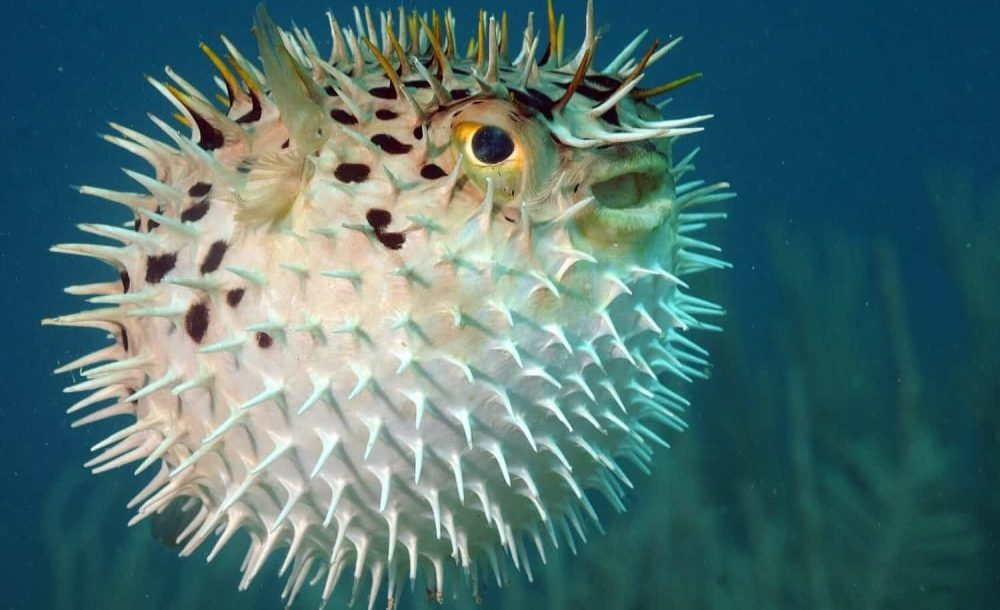
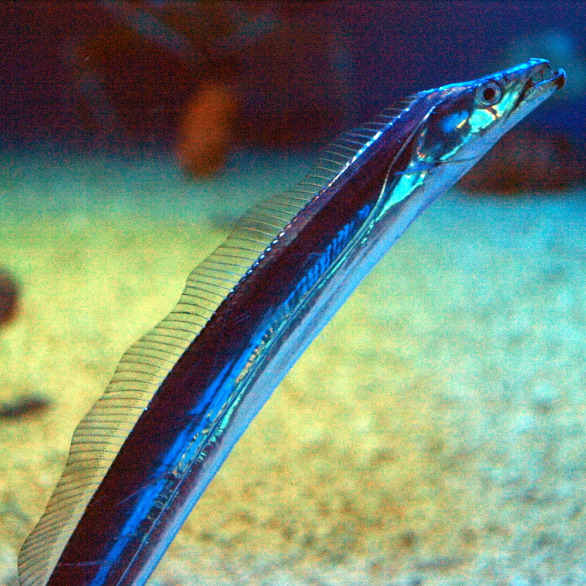
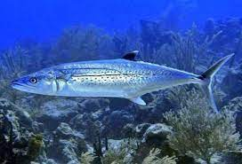
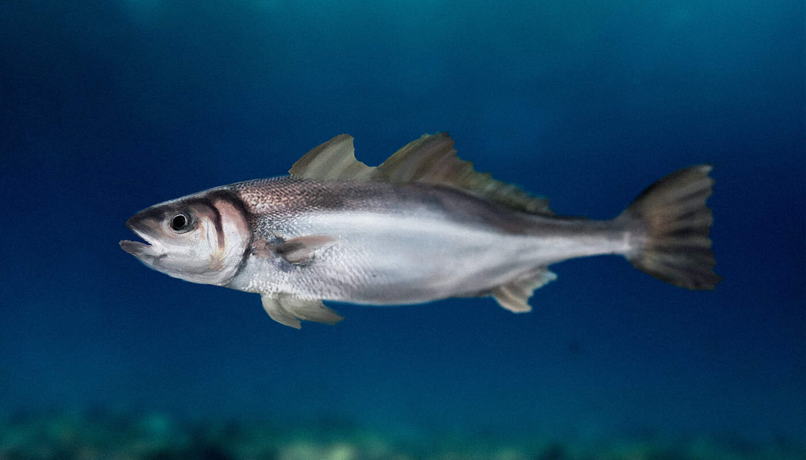
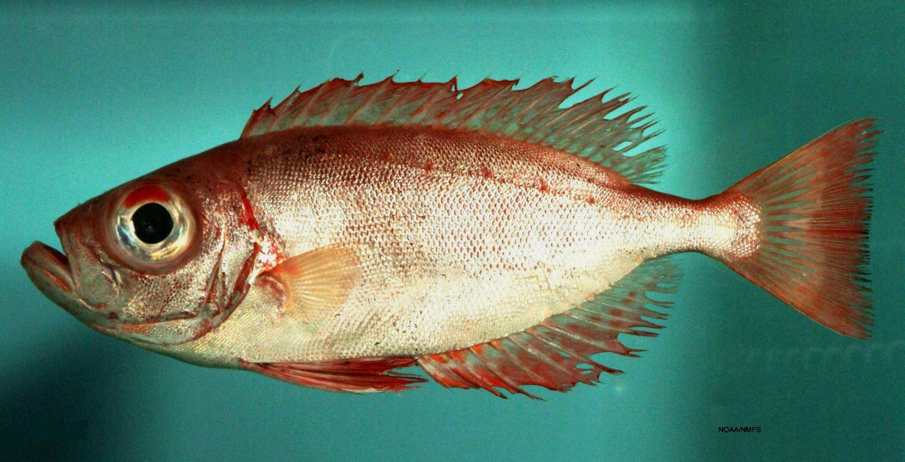
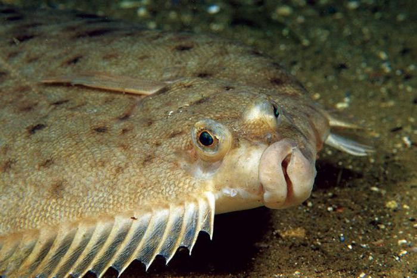

Baiacu
-
Baiacus, como popularmente são chamados, são peixes icônicos, os únicos do oceano capazes engolir água e ar para incharem seu corpo a até três vezes o seu tamanho original. Eles podem ser encontrados em águas ao redor do mundo todo, e são constantemente pescados por sua carne, que é tradicionalmente usada na culinária asiática.

Peixe-Espada
-
Este peixe caracteriza-se pelo corpo comprido e espalmado e pela proeminente crista que lhe assenta na nuca. O ânus situa-se algures sob o 36.º a 40.º raio dorsal, sendo que o espinho posterior ao ânus é pequeno e de formato triangular. Na boca, apresenta dentes pontiagudos e grandes, dos quais, alguns são dentes palatinos.

Cavala
-
O peixe Cavala é encontrada no Oceano Atlântico do Brasil a Massachusetts nos Estados Unidos, incluindo o Caribe e Golfo do México. Ela é uma espécie de “pelágico costeira”, ou seja, vivem em águas abertas próximas à costa. Ela vive em profundidade entre 35 a quase 180 metros. A Cavala prefere águas quentes, e raramente entram em águas abaixo de 20º C. Ela migra com as mudanças sazonais na temperatura da água e com as mudanças na disponibilidade de alimentos. Nadando em grandes cardumes, ela migra para o norte no verão e para o sul no inverno.

Pescada
-
A pescada é um peixe branco que conta com um sabor levemente adocicado e que possui diversos benefícios ao organismo. Como ela é uma carne branca, seu percentual de gordura é baixo, é rica em fósforo e iodo, auxiliando na manutenção de dentes e ossos e contribui para a redução da pressão arterial e do colesterol.

Olho-de-Cão
-
O olho-de-cão é um pequeno peixe de escamas, que chama atenção por causa dos seus olhos enormes, que chegam a ser maiores que o comprimento do focinho, e sua cor vermelha bastante intensa. O peixe tem alto valor culinário e normalmente é encontrado na medida média de 35 centímetros de comprimento, não tendo tamanho mínimo para o abate. Tem o corpo baixo e tipicamente alongado, com a coloração avermelhada intensa (rubro), orlas mais escuras margeando as nadadeiras dorsal e anal, enquanto as ventrais são negras.

Linguado
-
O Linguado é um peixe branco, magro de sabor suave e que se desfaz em lascas. É excelente com molhos delicados que não mascarem seu real sabor. É outra opção bem versátil na cozinha. Experimente assado, escalfado (cozido em líquido), cozido no vapor ou frito.
